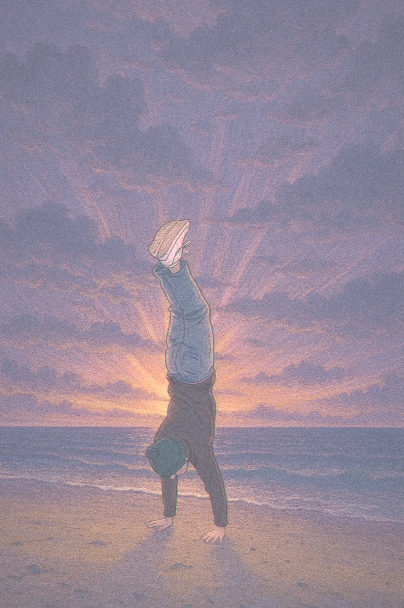

Golf Swing Analyzer
Real-time swing analysis from wearable sensors. My own swing through MediaPipe pose: joint angles, hand path, tempo.
tempo
backswing
downswing
hand speed

engineer · machine learning · video editor
scroll to play ▸
4 clips · drag the playhead by scrolling


Real-time swing analysis from wearable sensors. My own swing through MediaPipe pose: joint angles, hand path, tempo.
30+ FPS Lucas–Kanade tracking with Shi–Tomasi corners, forward–backward checks and dense flow.
github ↗A Keras CNN at 98% on MNIST. Next: draw a digit right here.
github ↗Four models compared; 7% lower RMSE with tuning and log-price targets.
github ↗also: pl/0 compiler · mikal–wix sync · github
2014–2020: COD edits, 3D compositing, camera tracking, thumbnails, and leading up to four editors. The viewer only sees the cut.
I'm a full-stack engineer focused on machine learning and data science, but what I really enjoy is solving problems — with tools I've picked up or ones built from scratch. Editing taught me that what the viewer sees matters as much as what's behind it.